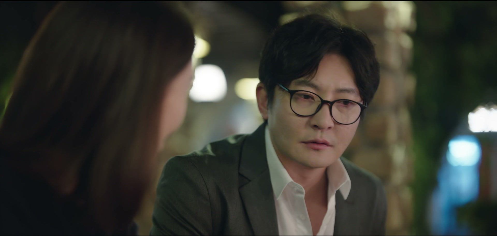
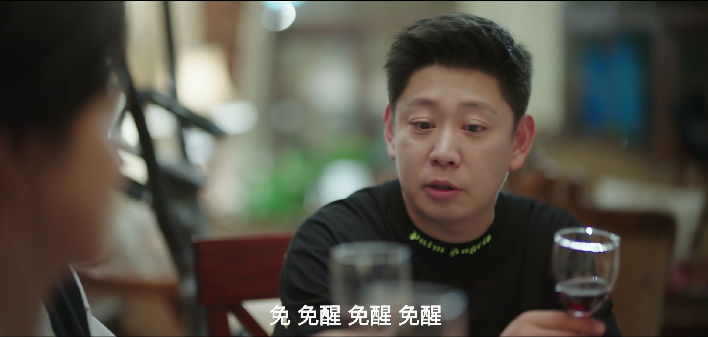
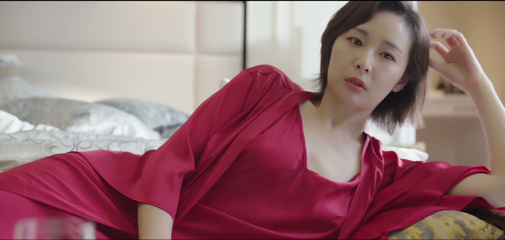
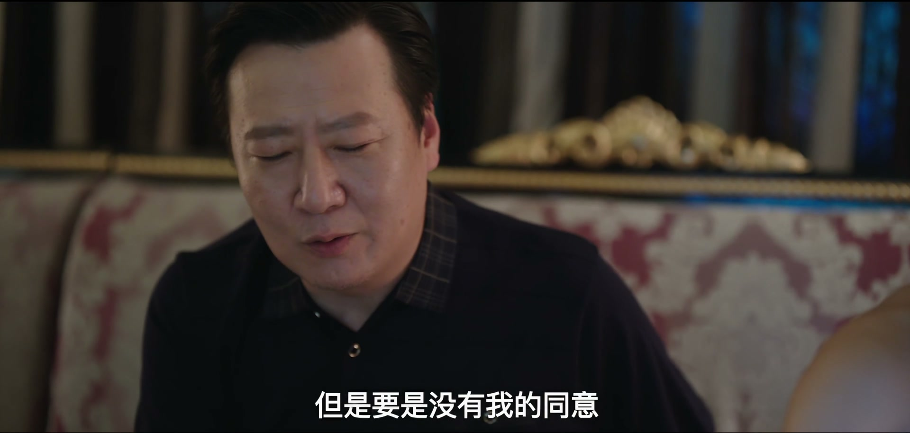
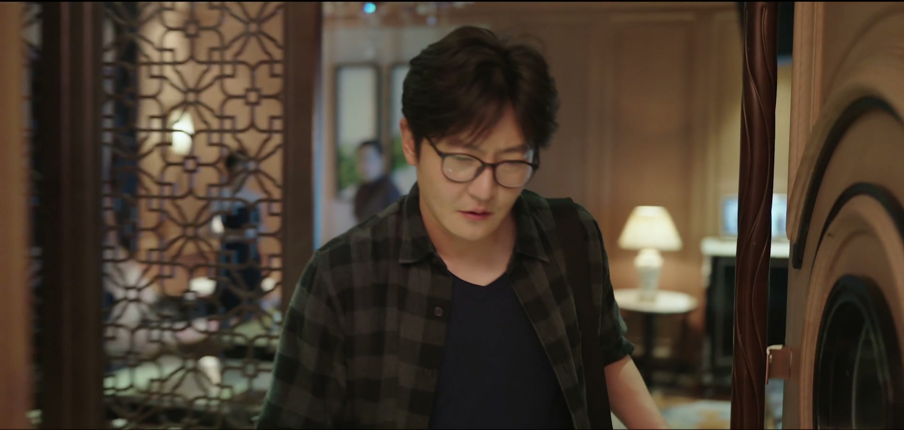
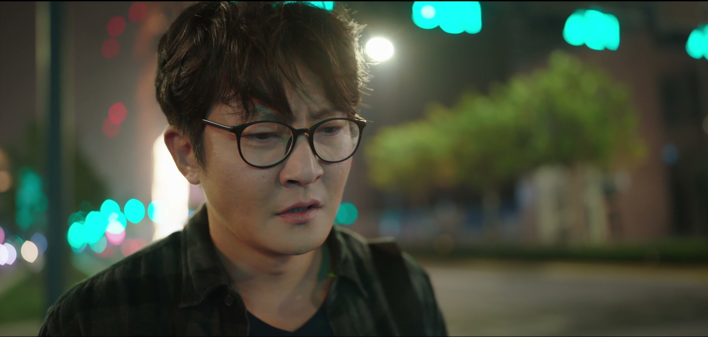
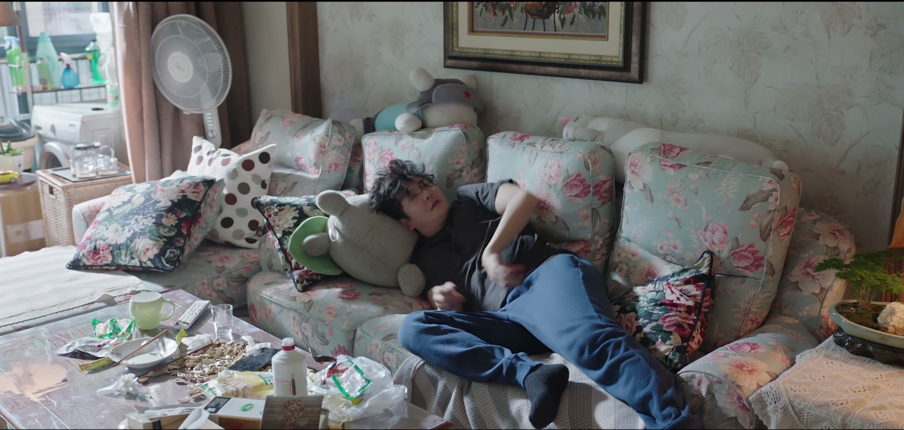
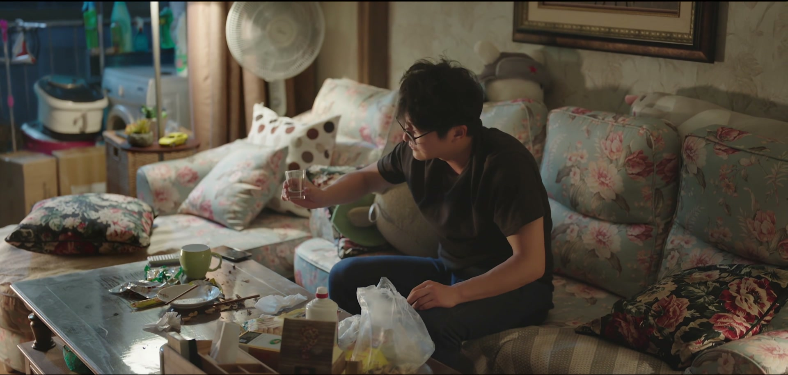
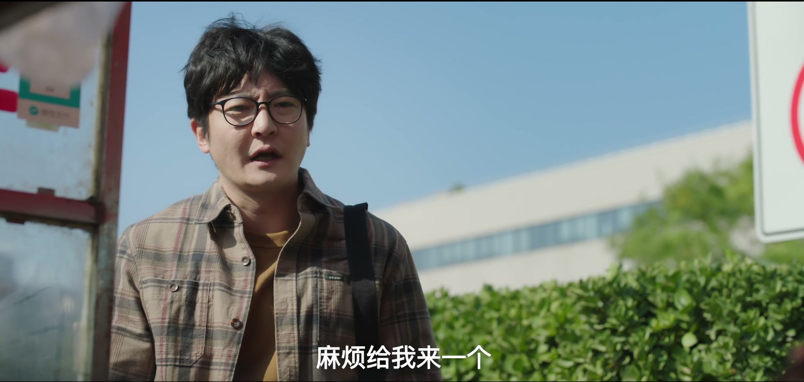
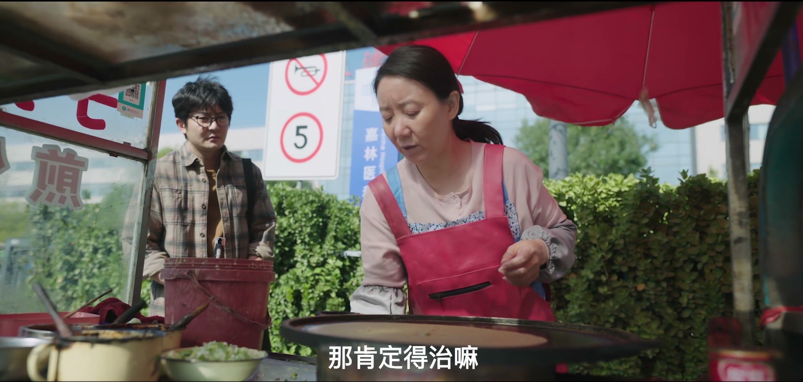

吹牛迟早要还
情境：余欢水吹嘘公司发的红酒值两千块、免醒、法国酒庄，岳母扫码一查——七十八一瓶，全家当场看穿。
遇到这种情况，可以这样做
- 越是没有的东西，越别急着往脸上贴金。
- 吹牛一时爽，被戳穿时全家陪你难堪。
- 靠编造的体面撑场子，翻车只是时间问题。

Drama Recap · 剧情图文总结
第 2 集 · 谎言的尽头
一瓶78元的「法国红酒」戳破余欢水的吹牛，甘虹一句「我们离了吧」堵住他所有解释。公司里三人为两千多万的分账撕破脸；老友吕夫蒙撕下「在非洲」的伪装，扯出当年大壮的旧账。父亲逼钱、离婚索证、医院那句「叫你的家属来找我」——谎言的利息，终于连本带利地砸了下来。
一瓶78元红酒、一笔讨不回的13万、一场兄弟摊牌——谎言的利息开始兑现。
第2集，从中秋夜开始。 余欢水提着公司发的红酒月饼赶到岳父家，先解释迟到的缘由，又吹嘘这酒值两千、还是「免醒」的法国酒。岳母扫码一查——七十八一瓶。岳父一口咬定：「你这是果汁啊还是酒啊？」一家人就着这瓶「果汁」和面子上过的节，把余欢水看成了笑话。
剧里的鸡毛蒜皮，往往是人生的缩影。这些情节不只是故事——当你在现实中遇到同样的处境时，它们能提醒你：先做什么、别做什么、怎么说才有效。
情境：余欢水吹嘘公司发的红酒值两千块、免醒、法国酒庄，岳母扫码一查——七十八一瓶，全家当场看穿。
情境：甘虹一句句戳穿他：冒领红酒月饼、妈妈给的十三万是假的。当一个人说的话没一句能信，婚姻就只剩离婚两个字。
情境：三人组为两千两百四十万的分成当场翻脸，赵觉民嫌自己拿得少，账还没分完，U盘先丢了。
情境：吕夫蒙撕下「在非洲」的伪装，承认自己就是存心让余欢水日子不好过——因为大壮，因为一段余欢水不敢面对的旧事。
情境：余欢水的父亲打来电话张口就要钱，威胁「你要不给我，我就去告你」。被原生家庭当作提款机，是这个中年男人又一道伤口。
情境：余欢水头晕、乏力、睡不醒，去医院抽血拍CT，医生却只丢下一句「下午三点，叫你的家属来找我」。

中秋夜，余欢水提着公司发的红酒和月饼赶到岳父家。他先解释迟到的缘由：单位搞联欢会，死活拖着他走不开，散了又堵车，最后打车赶来。岳母一句「真没想着等你。你们单位发的酒好，我们等的是酒」，把场面点破了一半。
开席他忙着圆场，又掏出红酒吹嘘：法国酒庄直订，值两千块，还是「免醒」酒。岳母扫码一查——七十八一瓶。岳父一口咬定「你这是果汁啊还是酒啊」，说这酒甜得像果汁。余欢水还想替单位找补：「他们怎么吃回扣吃得这样……」话没说完就被堵了回去：「你们那什么单位啊？」一顿中秋团圆饭，他把自己吃成了笑话。
关键台词 · KEY QUOTES

吃过饭，甘虹没有跟他一起回去的意思。她问他为什么跑到娘家来，又提起自己的怀疑：「我给你打电话你没接，我就又打到你们公司，说魏总罚你了。」余欢水支吾着「不就是上回迟到吗」，甘虹一句接一句：「是编造客户的名字、冒领红酒月饼吧？」
她看透了他：「你不撒谎会死吗？」最后一个问题落在钱上：「你妈给你那十三万是真的吗？」余欢水低着头：「不是真的。」「你借给吕夫蒙是真的吗？你要给我买车是真的吗？」「真的真的，我发誓。」可甘虹已经不想听了——「我今天同意你来，就是想告诉你，我们离了吧。」余欢水沉默半晌，回答：「好。」
关键台词 · KEY QUOTES

公司里，有人被叫住传话：这个月的出货单比上个月强，但「明天停这出货」。问为什么，只有一句「让你停你就停」，客户的单子怎么办，答「放假呀」。
电话打到魏总那边，关机；身边的人也说没跟他在一起。出货要停、老板失联，一切迹象都指向同一个方向：这盘生意，怕是要收了。风雨欲来，办公室里人人讳莫如深。
关键台词 · KEY QUOTES
画室门口，吕夫蒙正送走几位客人：「等到我们画展开幕那一天，还请各位光临。」唐韵在一旁，两人为马老答应来站台、还要致辞兴奋不已。手机响起，是余欢水——他催问：不是去十几天吗，都快一个月了，钱到底什么时候还？
吕夫蒙张口就是「在非洲」：「那非洲能收到微信吗？你以为是咱们国家呢。」余欢水放软态度道歉：「我刚才态度有点过激……咱们这么好的朋友，我很珍惜你的。」对方一句「为这点小钱你至于吗」，又说在等一个重要电话，催他挂线。余欢水只好咽下满肚子的火，叮嘱他「注意安全」。
关键台词 · KEY QUOTES

包间里，三人组的账，终于摊开了。赵觉民把U盘放在桌上：「所有的账我都拷到一个U盘里，大家放心啊，我在U盘在。」梁安妮报账：可分的利润两千两百四十万，魏总拿五成、她拿三成、老赵拿两成。
赵觉民当场炸了：「我是这个事的策划者、发起人，凭什么我拿的最少？」魏广军端坐不动：「要是没有我的同意，这事能干吗？要是没我的签字，那些赚钱的合同能生效吗？这次分成，是严格按照风险评估来制定的。」梁安妮冷笑：「承让。」赵觉民把「当初你说的什么要求都答应」甩出来，气氛剑拔弩张——门就在这时被推开了，余欢水站在门口：「真巧真巧，三位领导都在这儿。」
关键台词 · KEY QUOTES

余欢水连声道着「对不起，打扰了」退了出去，脚步还没走远又折了回来：「我这个有点太不懂事了，我请大家喝酒。」他自罚一杯，解释自己是来找一个哥们，跟着人进了餐厅，挨着包间找进来的——「正好你们在这儿，很巧。」
敬酒时手一抖，酒洒在梁安妮的新裙子上。「我刚买的裙子！」一句「滚」，他灰溜溜退场。他一走，三人立刻交换眼神：刚走又回来，还罚酒道歉，不正常。就算真是巧合，也得谨慎——马上离开，分成的事，改天再说。
关键台词 · KEY QUOTES
余欢水在门口堵住了吕夫蒙。他憋了太久：「你为什么要骗我？我拿你当兄弟，你怎么可以这样对兄弟呢？」他一件件数：老婆闹着离婚，儿子看不起他，工作也快保不住了——全是因为这辆「非洲的车」。
吕夫蒙不躲了：「我就是要这样对你，我就是要骗你，就是要撒谎，就是让你日子不好过。」他反问：「你日子不好过就委屈了？那大壮呢？大壮他们家日子好过吗？」余欢水的气势一下子矮了下去。吕夫蒙撂下最后一句：「十三万算个屁啊，我分分钟给你。我会还给你，但是得看我心情。」
关键台词 · KEY QUOTES

父亲的电话来得不是时候。他张口就要钱，说余欢水母亲去世时手里还留了十几万，逼着余欢水拿出来：「你敢说你没钱？你要不给我，我就去告你。」余欢水一句「我没钱」，被骂得抬不起头。
挂了电话，他走进路边的超市。「谁说我要买便宜的？我就要喝贵的。有钱喝茅台！」一千四百九一瓶，他眼都不眨；末了又拿了一根老冰棍。破罐破摔的人生，从这一贵一贱的两样东西正式开始。
关键台词 · KEY QUOTES

甘虹堵住了他：「你把结婚证、户口本还有房本都藏哪儿了？」余欢水说：「我藏起来也没有用。」甘虹把话撂死：「这个婚呢，是离定了。我等着你，等着你带着这些证件来找我。」
她转身要走，余欢水只回了一个字：「好。」他把这场离婚接了下来，像一个早已知道自己会被判罚的人，提前咽下了所有争辩。
关键台词 · KEY QUOTES

U盘不见了。有人脸色发白地传话：「U盘被余欢水给弄丢了？」三个人当即炸锅，翻箱倒柜地找：监控看了，没有；垃圾桶翻了，没有；家里、车里、办公室，能找的地方都找遍了。「你的别墅也翻过了吗？」「对不起。」
分账没分成，账本先没了着落。谁都不肯先开口说那句最怕的话——那晚误闯包间的余欢水，到底听到了多少？
关键台词 · KEY QUOTES

余欢水给经理发微信请假：今天生病没上班，明天想去医院做个检查。经理回得刻薄：「也就是老员工，要是新员工早开除了。」好歹批了假。
医院里，他向医生倒苦水：最近老是头晕，眼睛也不舒服，浑身乏力，睡一觉跟没睡一样，很难受。医生开单：「抽血，做个CT吧。」他先在医院门口买了煎饼，等着取片子。经理的电话又追过来催他回去——唐总那个地铁项目是笔大单，再不回去就交给吴安同了。他只能应下：拿了单子就回去。
关键台词 · KEY QUOTES

片子出来，余欢水求医生加塞看片。医生扫了一眼CT，却不肯当场说结果：「你不是公司还有事吗？你先去忙吧。下午三点，叫你的家属来找我。」他追问「什么情况，您可以直接跟我说」，医生只重复同一句话。
他打给甘虹：「能来趟医院吗？」电话那头冷冰冰：「去医院干吗？那儿不办离婚。」「我片子刚出来，医生想要跟家属谈。」「余欢水，我现在没有时间，也没有兴趣陪你玩。」
医院门口，他听煎饼摊的大姐讲自己的故事：丈夫生病，前后半年多花了二十几万，人还是走了；她摆摊三年多，慢慢还亲戚的债。「要是搁到现在，我绝对不看。人走了，钱也没有了。」他望着大姐，鬼使神差地开口：「大姐，你能帮我个忙吗？我给你两百块钱。」——他连一个能在下午三点来接他「家属」的人，都找不到了。
关键台词 · KEY QUOTES
被谎言反噬的一天。中秋吹牛翻车、被甘虹宣布离婚、被吕夫蒙撕破脸、被父亲逼钱；下午头晕眼花进了医院，CT的结果医生不肯直说，只让他下午三点叫家属来——他连家属都请不动。
终于摊牌的人。她打过公司电话，知道丈夫冒领红酒月饼；一句「你妈那十三万是真的吗」，让最后一个谎也现了形。「我们离了吧」说出口，她守着结婚证、户口本和房本，等他来签字。
真正的债主，也是「骗局」的操盘手。他在「非洲」演了一个月，被拆穿后大方承认：就是要让余欢水日子不好过。提起大壮，他提醒余欢水——这世上还有一笔更重的账。
三人组的「大股东」。分账时拿五成，搬出「风险评估」压赵觉民；U盘一丢，他第一个急了眼，翻监控、翻垃圾桶，就差把别墅也翻个底朝天。
分赃会上坐三成的女人。面对赵觉民讨价还价，一句「承让」尽显精明；余欢水误闯包间，她比谁都警觉，提醒「宁可当巧合也要谨慎」。
握有U盘账本的人。分赃时嫌两成太少，把「当初你说的什么要求都答应」翻出来砸向魏广军；U盘失踪后，他那句「我在U盘在」成了悬在头顶的刀。
吕夫蒙身边的画家，画展的主角。为筹备画展、请马老站台忙前忙后；吕夫蒙接余欢水的催债电话时，她在一旁等着他。「在非洲采风」的借口，正是陪她画的。
电话里出现的父亲。张口就要钱，提起余欢水母亲留下的钱，撂下「你要不给我，我就去告你」。这个家给余欢水的，从来不是撑腰，而是要账。
余欢水在岳父家吹嘘「这酒值两千」，岳母扫码一查——七十八一瓶。一个谎言被当场钉在饭桌上，岳父幽幽补刀：「你这是果汁啊还是酒啊？」
「你妈给你那十三万是真的吗？」「不是真的。」当最后一个谎也塌了，甘虹说：「我今天同意你来，就是想告诉你，我们离了吧。」余欢水回了一个字：「好。」
「所有的账我都拷到一个U盘里，我在U盘在。」赵觉民的分赃开场白越硬气，U盘失踪时的打脸就越响——三个人翻遍监控和垃圾桶，账本却像从没存在过。
被余欢水当街堵住，吕夫蒙不再演戏：「我就是要骗你，就是让你日子不好过。」他提起大壮——一个名字，让余欢水的委屈瞬间哑了火。
父亲的电话挂断后，余欢水走进超市：「有钱喝茅台。」一千四百九的红酒眼都不眨，末了加一根老冰棍。破罐破摔的第一天，从一贵一贱两样东西开始。
医生看过CT，只留下一句「下午三点，叫你的家属来找我」。余欢水打给甘虹，电话那头冷冰冰：「我现在没有时间，也没有兴趣陪你玩。」——检查报告还在等他，家人却先一步走远了。
CT拍完，医生不肯当面说结果，只让「家属来」。医生越避重就轻，结果越让人心悬——余欢水的人生，即将被一份报告改写。
U盘里的账本凭空消失，三人组把怀疑的目光投向误闯包间的余欢水。一张看不清的牌，会把多少人拖下水？
吕夫蒙只提了一个名字，余欢水就哑了。大壮是谁、当年发生了什么、为什么吕夫蒙要替他还这笔「账」——这段旧事，是全剧最深的坑。
「带着结婚证、户口本还有房本来找我。」甘虹把离婚的路铺得清清楚楚，余欢水能拖几天，却拖不掉那枚越踩越近的章。
一千四百九的红酒配一根老冰棍，是余欢水「不要了」的宣言。当一个人什么都不怕了，才是真正的变数开始。